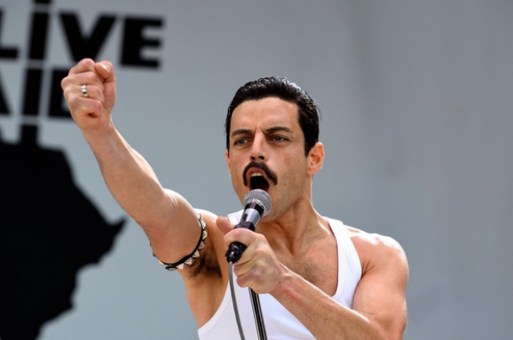
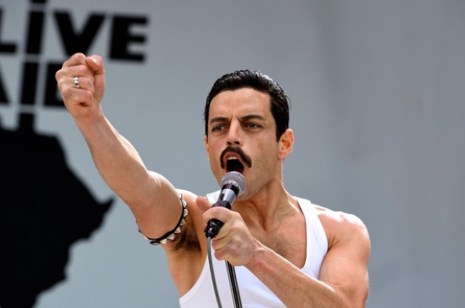
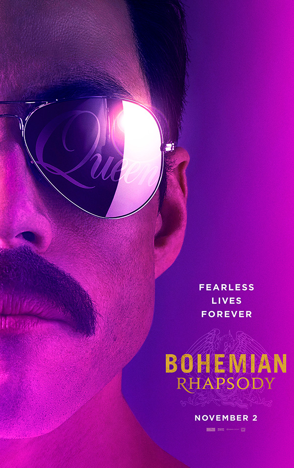
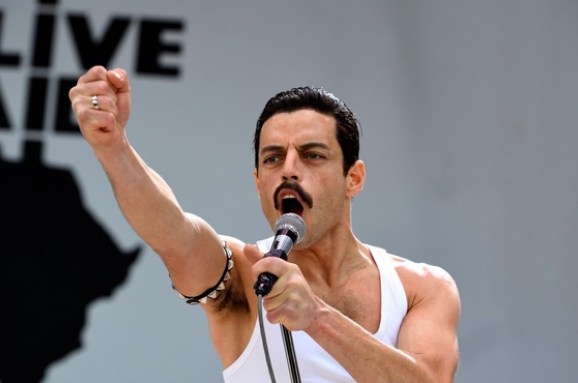

Богемна рапсодія (англ. Bohemian Rhapsody) — американо-британський біографічний фільм 2018 року про гурт «Queen», що розповідає про співака Фредді Мерк'юрі, роль якого зіграв Рамі Малек.

Сюжет картини охоплює період 1970-1985 року, розповідаючи про життя, творчість і відносинах всередині групи Queen, а також про особисте життя фронтмена групи - Фредді Меркьюрі.
У 1970 році Фаррух Булсара, студент-дизайнер і вантажник багажу в аеропорту, відвідує концерт групи Smile. Після шоу Фаррух зустрічається з членами групи і дізнається, що групу щойно покинув вокаліст. Недовго думаючи, він пропонує себе в якості нового вокаліста, і його пропозиція була схвалена учасниками групи - Брайаном Меєм і Роджером Тейлором. Фаррух бере собі сценічний псевдонім Фредді Меркьюрі. Новий колектив з подачі Фредді отримує назву Queen і починає гастрольну діяльність по Великобританії. Також Фредді заводить роман з продавщицею з модного магазину «Biba» - Мері Остін. Для запису дебютного альбому музиканти продають свій концертний мінівен і записують альбом. Під час запису в студії їх помічає один з менеджерів EMI і передає демо групи агенту Елтона Джона - Джону Ріду. Рід зустрічається з Queen і пропонує співпрацю. До 1975 року Queen домагаються комерційного успіху і проводять ряд гастрольних турів за океаном. При підготовці композицій для нового альбому A Night at the Opera представники звукозаписної компанії відмовляються випустити новаторський 6-хвилинний трек «Bohemian Rhapsody» в якості синглу. Музиканти завзято працювали над його записом, домагаючись незвичайного звучання і гармонії, але представники звукозаписної компанії були непохитні у своєму рішенні. У підсумку, за допомогою ді-джея Кенні Еверетта, композиція виходить спочатку на радіо. Її зауважує світова громадськість, і вона стає хітом, принісши групі всесвітню популярність. Група починає нескінченно гастролювати. Фредді все рідше бачиться з Мері і зауважує в собі ознаки бісексуальності. У нього починаються стосунки з менеджером групи Полом Прентером, а роман з Мері припиняється.
До початку 1980-х всередині групи наростають розбіжності. Фредді все частіше йде в неконтрольовані сексуальні пригоди. У 1981 році він захоплюється офіціантом на одній з вечірок в його будинку. У 1982 році на прес-конференції, присвяченій виходу альбому Hot Space, преса тероризує Меркьюрі Щоб отримати інформацію про сексуальне життя. В результаті Фредді йде з групи і починає сольний проект, уклавши контракт з CBS Records. У 1985 році він випускає дебютний альбом Mr. Bad Guy. Тривають його відносини з Полом Прентером, а також низка випадкових зв'язків під час буйних оргій музиканта. Фредді все менше спілкується з оточуючими, замикається в собі і незабаром виявляє, що від нього приховують новини. Також Фредді зауважує проблеми зі здоров'ям, потай від усіх проходить обстеження і дізнається, що ВІЛ-інфікований.
Мері домагається зустрічі з Фредді, розповідає йому про майбутній концерт Live Aid, про який він не знав, і пропонує возз'єднатися з групою. Фредді приїжджає в Лондон, зустрічається з групою, просить у них прощення і пропонує виступити на Live Aid. Вибачення були прийняті, і група в останній момент погоджується взяти участь в концерті. Благодійний концерт Live Aid відбувся 13 липня 1985 року в стадіоні «Уемблі» і пройшов з величезним успіхом. Родзинкою програми стає виступ Queen.
